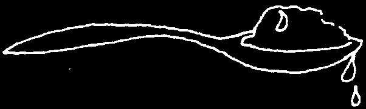
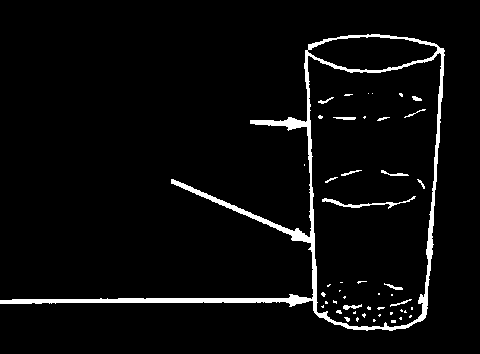
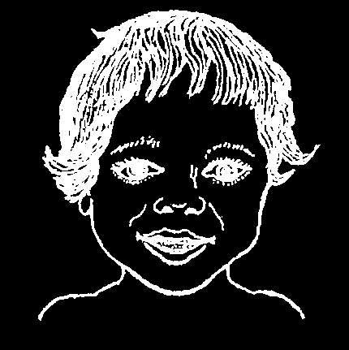
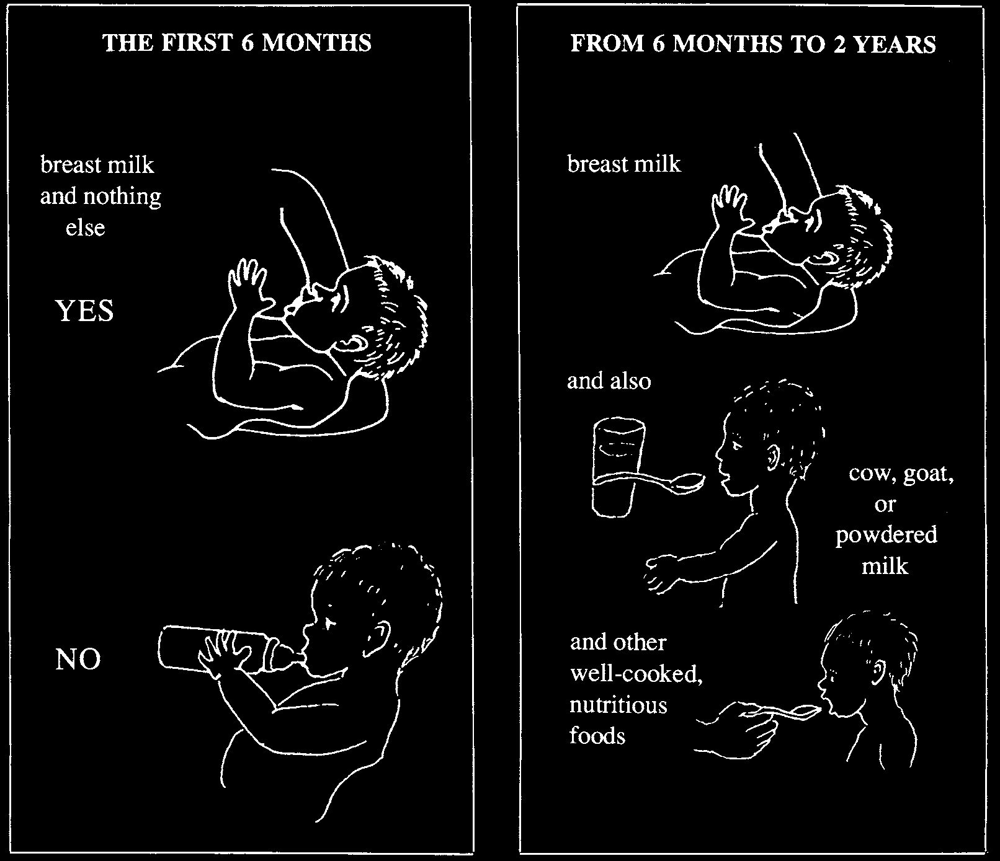
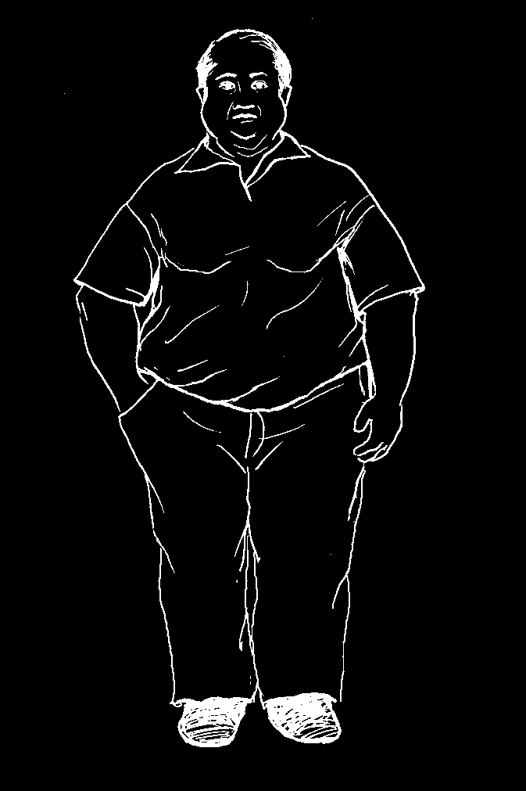
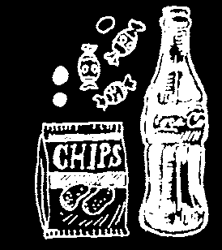
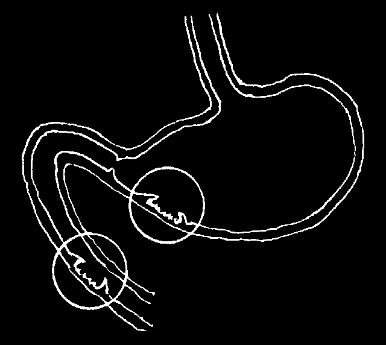
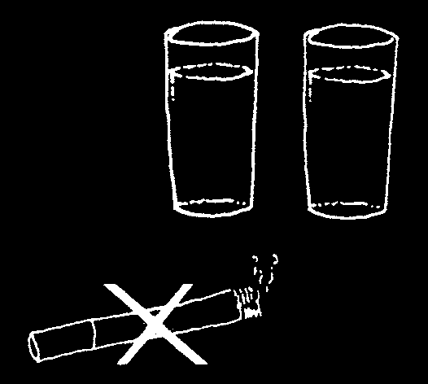
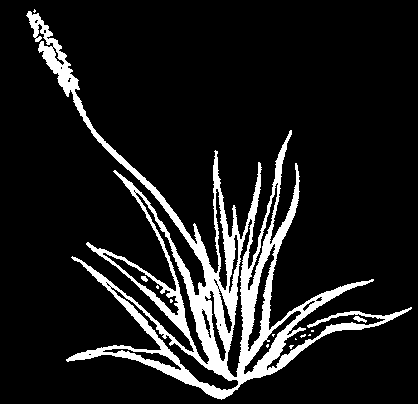

THINGS TO AVOID IN OUR DIET
A lot of people believe that there are many kinds of foods that will hurt them, or that they should not eat when they are sick. They may think of some kinds of foods as 'hot’ and others as 'cold’, and not permit hot foods for 'hot’ sicknesses or cold foods for 'cold’ sicknesses. Or they may believe that many different foods are bad for a mother with a newborn child. Some of these beliefs are reasonable but others do more harm than good. Often the foods people think they should avoid when they are sick are the very foods they need to get well.
A sick person has even greater need for plenty of nutritious food than a healthy person. We should worry less about foods that might harm a sick person and think more about foods that help make him healthy—for example: high energy foods together with fruit, vegetables, legumes, nuts, milk, meat, eggs, and fish. As a general rule:
The same foods that are good for us when we are healthy are good for us when we are sick.
Also, the things that harm us when we are healthy do us even more harm when we are sick. Avoid these things:
alcoholic drinks tobacco greasy food a lot of sugar too much and sweets coffee
• Alcohol causes or makes worse diseases of the liver, stomach, heart, and nerves.
It also causes social problems.
• Smoking can cause chronic (long-term) coughing or lung cancer and other problems (see p. 149). Smoking is especially bad for people with lung diseases like tuberculosis, asthma, and bronchitis.
• Too much greasy food or coffee can make stomach ulcers and other problems of the digestive tract worse.
• Too much sugar and sweets spoil the appetite and rot the teeth. However, some sugar with other foods may help give needed energy to a sick person or poorly nourished child.
A few diseases require not eating certain other foods. For example, people with high blood pressure, certain heart problems, or swollen feet should use little or no salt. Too much salt is not good for anyone. Stomach ulcers and diabetes also require special diets (see p. 127 and 128).



THE BEST DIET FOR SMALL CHILDREN
THE FIRST 6 months OF LIFE
For the first 6 months give the baby breast milk and nothing else. It is better than any baby food or milks you can buy. Breast milk helps protect the baby against diarrhea and many infections. It is best not to give extra water or teas, even in hot weather.
Some mothers stop breastfeeding early because they think that their milk is not good enough for their baby, or that their breasts are not making enough milk. However, a mother’s milk is always very nutritious for her baby, even if the mother herself is thin and weak.
If a woman has HIV, sometimes she can pass HIV to a baby in her breast milk.
But if she does not have access to clean water, her baby is more likely to die from diarrhea, dehydration, and malnutrition than AIDS. Now medicines can prevent the spread of HIV to babies through breast milk (see p. 398). But only you can evaluate the conditions in your home and community and decide what to do.
Nearly all mothers can produce all the breast milk their babies need:
♦ The best way for a mother to keep making enough breast milk is to breastfeed the baby often, eat well, and drink lots of liquids.
♦ Do not give the baby other foods before he is 6 months old, and always breastfeed before giving the other foods.
♦ If a mother’s breasts produce little or no milk, she should continue to eat well, drink lots of liquids and let the baby suck her breasts often. After each breastfeeding, give the baby, by cup (not bottle), some other type of milk— like boiled cow’s or goat’s milk, canned milk, or powdered milk. (Do not use condensed milk.) Add a little sugar or vegetable oil to any of these milks.
Note: Whatever type of milk is used, some cooled, boiled water should be added. Here are two examples of correct formulas:
# 1
# 2
2 parts boiled, cooled cow’s milk
2 parts canned evaporated milk
1 part boiled, cooled water
3 parts boiled, cooled water
1 large spoonful sugar or oil for
1 large spoonful sugar or oil for each large glass each large glass
If non–fat milk is used, add another spoonful of oil.
♦ If possible, boil the milk and water. It is safer to feed the baby with a cup (or cup and spoon) than to use a baby bottle. Baby bottles and nipples are hard to keep clean and can cause infections and diarrhea (see p. 154). If a bottle is used, boil it and the nipple each time before the baby is fed.
♦ If you cannot buy milk for the child, make a porridge from rice, cornmeal, or other cereal. Always add to this some skinned beans, eggs, meat, chicken, or other protein. Mash these well and give them as a liquid. If possible add sugar and oil.
WARNING: Cornmeal or rice water alone is not enough for a baby. The child will not grow well. He will get sick easily and may die. The baby needs a main food with added helper foods.


FROM 6 months TO 1 YEAR OF AGE:
1. Keep giving breast milk, if possible until the baby is 2 or 3 years old.
2. When the baby is 6 months old, start giving her other foods in addition to breast milk. Always give the breast first, and then the other foods. It is good to start with a gruel or porridge made from the main food (p. 111) such as maize meal or rice cooked in water or milk. Then start adding a little cooking oil for extra energy. After a few days, start adding other helper foods (see p. 110). But start with just a little of the new food, and add only 1 at time or the baby may have trouble digesting them. These new foods need to be well cooked and mashed. At first they can be mixed with a little breast milk to make them easier for the baby to swallow.
3. Prepare inexpensive, nutritious feedings for the baby by adding helper foods to the main food (see p. 110). Most important is to add foods that give extra energy (such as oil) and—whenever possible—extra iron (such as dark green leafy vegetables).
remember, a young child’s stomach is small and cannot hold much food at one time. So feed her often, and add high–energy helpers to the main food:
A spoonful of cooking oil added to a child’s food means he has to eat only 3/4 as much of the local main food in order to meet his energy needs. The added oil helps make sure he gets enough energy
(calories) by the time his belly is full.
CAUTION: The time when a child is most likely to become malnourished is from
6 months to 2 years old. This is because breast milk by itself does not provide enough energy for a baby after 6 months of age. Other foods are needed, but often the foods given do not contain enough energy either. If the mother also stops breastfeeding, the child is even more likely to become malnourished.
For a child of this age to be healthy we should:
♦ Keep feeding her breast milk ♦ Filter, boil, or purify the as much as before.
water she drinks.
♦ Feed her other nutritious
♦ Keep the child and her foods also, always starting surroundings clean.
with just a little.
♦ When she gets sick,
♦ Feed her at least 5 times feed her extra well and a day and also give her more often, and give her snacks between meals.
plenty of liquids to drink.
♦ Make sure the food is clean and freshly prepared.
For mothers infected with HIV: After 6 months, your baby will be bigger and stronger, and will have less danger of dying from diarrhea. If you have been breastfeeding her, now you should switch to other milks and feed the baby other foods. This way the baby will have less risk of getting HIV.

ONE YEAR AND OLDER:
After a child is 1 year old, he can eat the same foods as adults, but should continue to breastfeed (or drink milk whenever possible).
Every day, try to give the child plenty of the main food that people eat, together with 'helper’ foods that give added high energy, proteins, vitamins, iron, and minerals
(as shown on p. 111) so that he will grow up strong and healthy.
To make sure that the child gets enough to eat, serve him in his own dish, and let him take as long as he needs to eat his meal.
Children and candy: Do not accustom small children to eating a lot of candy and sweets or drinking soft drinks (colas). When they have too many sweets, they no longer want enough of the other foods they need. Also, sweets are bad for their teeth.
However, when food supply is limited or when the main foods have a lot of water or fiber in them, adding a little sugar and vegetable oil to the main food provides extra energy and allows children to make fuller use of the protein in the food they get.
THE BEST DIET FOR SMALL CHILDREN

HARMFUL IDEAS ABOUT DIET
1. The diet of mothers after giving birth:
In many areas there is a dangerous popular belief that a woman who has just had a baby should not eat certain foods. This folk diet—which forbids some of the most nutritious foods and may only let the new mother eat things like cornmeal, noodles, or rice soup—makes her weak and anemic. It may even cause her death, by lowering her resistance to hemorrhage (bleeding) and infection.
After giving birth a mother needs to eat the most nutritious foods she can get.
In order to fight infections or bleeding and to produce enough milk for her child, a new mother should eat the main food together with plenty of body building foods like beans, eggs, chicken, and if possible, milk products, meat, and fish.
She also needs protective foods like fruits and vegetables, and high energy helpers
(oils and fatty foods). None of these foods will harm her; they will protect her and make her stronger.
Here is a healthy mother who ate
Here lies a mother who was not given nutritious many kinds of nutritious foods foods after giving birth:
after giving birth:
2. It is not true that oranges, guavas, or other fruits are bad for a person who has a cold, the flu, or cough. In fact, fruits like oranges and tomatoes have a lot of vitamin C, which may help fight colds and other infections.
3. It is not true that certain foods like pork, spices, or guavas cannot be eaten while taking medicine. However, when a person has a disease of the stomach or other parts of the digestive system, eating a lot of fat or greasy foods may make this worse whether or not one is taking medicines.

SPECIAL DIETS FOR SPECIFIC HEALTH PROBLEMS
Anemia
A person with anemia has thin blood. This happens when blood is lost or destroyed faster than the body can replace it. Blood loss from large wounds, bleeding ulcers, or dysentery can cause anemia. So can malaria, which destroys red blood cells. Not eating enough foods rich in iron can cause anemia or make it worse.
Women can become anemic from blood loss during monthly bleeding (menstrual periods) or childbirth if they do not eat the foods their bodies need. Pregnant women are at risk of becoming severely anemic, because they need to make extra blood for their growing babies.
In children anemia can come from not eating foods rich in iron. It can also come from not starting to give some foods in addition to breast milk, after the baby is 6 months old. Common causes of severe anemia in children are hookworm infection (see p. 142), chronic diarrhea, and dysentery.
The signs of anemia are:
• pale or transparent skin
• If the anemia is very severe, face
• pale insides of eyelids and feet may be swollen, the
• white fingernails heartbeat rapid, and the person
• pale gums may have shortness of breath.
• weakness and fatigue
• Children and women who like to eat dirt are usually anemic.
Treatment and prevention of anemia:
♦ Eat foods rich in iron. Meat, fish, and chicken are high in iron. Liver is especially high. Dark green leafy vegetables, beans, peas, and lentils also have some iron. It also helps to cook in iron pots (see p. 117). To help the body absorb more iron, eat raw vegetables and fruit with meals, and avoid drinking coffee and tea with food.
♦ If the anemia is moderate or severe, the person should take iron (ferrous sulfate pills, p. 392). This is especially important for pregnant women who are anemic.
For nearly all cases of anemia, ferrous sulfate tablets are much better than liver extract or vitamin B12. As a general rule, iron should be given by mouth, not injected, because iron injections can be dangerous and are no better than pills.
♦ If the anemia is caused by dysentery (diarrhea with blood), hookworm, malaria, or another disease, this should also be treated.
♦ If the anemia is severe or does not get better, seek medical help. This is especially important for a pregnant woman.
Many women are anemic. Anemic women run a greater risk of miscarriage and of dangerous bleeding in childbirth. It is very important that women eat as much of the foods high in iron as possible, especially during pregnancy. Allowing
2 to 3 years between pregnancies lets the woman regain strength and make new blood (see Chapter 20).


Rickets
Children whose skin is almost never exposed to the sunlight may become bowlegged and develop other bone deformities (rickets). This problem can be
Signs of rickets:
combatted by giving the child fortified milk bony and vitamin D (found in fish liver oil). However, necklace the easiest and cheapest form of prevention curved is to be sure direct sunlight reaches the bones child’s skin for at least 10 minutes a day or for big joints longer periods more often. (Be careful bowed legs not to let his skin burn.) Never give large doses of vitamin D over long periods, as it can poison the child.
SUNLIGHT IS THE BEST PREVENTION
AND TREATMENT OF RICKETS.
High Blood Pressure (Hypertension)
High blood pressure can cause many problems, such as heart disease, kidney disease, and stroke. Fat people are especially likely to have high blood pressure.
Signs of dangerously high blood pressure:
• frequent headaches
• pounding of the heart and shortness of breath with mild exercise
• weakness and dizziness
• occasional pain in the left shoulder and chest
All these problems may also be caused by other diseases. Therefore, if a person suspects he
A BLOOD
has high blood pressure, he should see a health
PRESSURE CUFF
worker and have his blood pressure measured.
for measuring blood pressure
WARNING: High blood pressure at first causes no signs, and it should be lowered before danger signs develop. People who are overweight or suspect they might have high blood pressure should have their blood pressure checked regularly. For instructions on measuring blood pressure, see p. 410 and 411.
What to do to prevent or care for high blood pressure:
♦
If overweight, lose weight (see next page).
♦
Avoid fatty foods, especially pig fat, and foods with a lot of sugar or starch.
Always use vegetable oil instead of pig fat.
♦
Prepare and eat food with little or no salt.
♦
Do not smoke. Do not drink much alcohol.
♦
When the blood pressure is very high, the health worker may give medicines to lower it. Many people can lower their blood pressure by losing weight if they are fat (next page), and by learning to relax.


People who are too Heavy
To be very fat is not healthy. Very heavy people are more likely to get high blood pressure, stroke, gallstones, some kinds of diabetes, arthritis in legs and feet, and other problems. Sometimes being too heavy brings on illness, and sometimes illness may cause you to become too heavy.
As our diets change and traditional foods are replaced by processed foods, especially “junk foods” high in calories but low in nutrition, people tend to gain weight in ways that are not healthy.
Losing weight may help with the illnesses mentioned above. Losing weight is also important if you are having difficulty doing your daily activities. You can lose weight by:
♦ eating less greasy, fatty, or oily foods.
♦ eating less sugar or sweet foods.
♦ getting more exercise.
♦ stop eating processed foods and eat fresh fruits and vegetables instead.
Constipation
A person who has hard stools and has not had a bowel movement for 3 or more days is said to be constipated. Constipation is often caused by a poor diet (especially not eating enough fruits, green vegetables, or foods with natural fiber like whole grain bread) or by lack of exercise.
Drinking more water and eating more fruits, vegetables, and foods with natural fiber like whole grain bread, cassava, wheat bran, rye, carrots, turnips, raisins, nuts, pumpkin or sunflower seeds, is better than using laxatives. It also helps to add a little vegetable oil to food each day. Older people especially may need to walk or exercise more in order to have regular bowel movements.
A person who has not had a bowel movement for 4 or more days, if he does not have a sharp pain in his stomach, can take a mild salt laxative like milk of magnesia.
But do not take laxatives often.
Do not give laxatives to babies or young children. If a baby is severely constipated, put a little cooking oil up the rectum (asshole). Or, if necessary, gently break up and remove the hard shit with a greased finger.
Never use strong laxatives or purgatives— especially if there is stomach pain.
Diabetes
Persons with diabetes have too much sugar in their blood. This problem can start when a person is young (juvenile diabetes) or older (adult diabetes). It is usually more serious in young people, and they need a medicine called insulin to control it.
But it commonly starts when a person is over age 40, eats too much and gets fat.
Early signs of diabetes:
Later, more serious signs:
• always thirsty
• itchy skin
• urinates (pees) often and a lot
• periods of blurry eyesight
• always tired
• some loss of feeling in hands or feet
• always hungry
• frequent vaginal infections
• weight loss
• sores on the feet that do not heal
• loss of consciousness (in extreme cases)
All these signs may be caused by other diseases. In order to find out whether a person has diabetes, test her urine to see if there is sugar in it. One way to test the urine is to taste it. If it tastes sweet to you, have 2 other persons taste it. Have them also taste the urine of 3 other people. If everyone agrees that the same person’s urine is sweeter, she is probably diabetic.
Another way of testing urine is to use special paper strips (for example, Uristix). If these change color when dipped in the urine, it has sugar in it.
If the person is a child or young adult, he should be seen by an experienced health worker or doctor.
When a person gets diabetes after he is 40 years old, it can often be best controlled without medicines, by eating correctly. The diabetic person’s diet is very important and must be followed carefully for life.
The diabetic diet: Fat people with diabetes should lose weight until their weight is normal. Diabetics must not eat any sugar or sweets, or foods that taste sweet. It is important for them to eat lots of high fiber foods, such as whole grain breads. But diabetics should also eat some other starchy foods, like beans, rice, and potatoes, and also foods high in protein.
Diabetes in adults can sometimes be helped by drinking the sap of the prickly pear cactus (nopal, Opuntia). To prepare, cut the cactus into small pieces and crush them to squeeze out the liquid. Drink 1 ½ cups of the liquid 3 times each day before meals.
To prevent infection and injury to the skin, clean the teeth after eating, keep the skin clean, and always wear shoes to prevent foot injuries. For poor circulation in the feet (dark color, numbness), rest often with the feet up. Follow the same recommendations as for varicose veins (p. 175).


Acid Indigestion, Heartburn, and Stomach Ulcers
Acid indigestion and 'heartburn’ often come from eating too much heavy or greasy food or from drinking too much alcohol or coffee. These make the stomach produce extra acid, which causes discomfort or a 'burning’ feeling in the stomach or mid chest.
Some people mistake the chest pain, called 'heartburn’, for a heart problem rather than indigestion. If the pain gets worse when lying down, it is probably heartburn.
Frequent or lasting acid indigestion is a warning sign of an ulcer.
An ulcer is a chronic sore in the digestive system, usually caused by bacteria. Too much acid in the stomach prevents it from healing.
It may cause a chronic, dull (sometimes sharp)
pain in the pit of the stomach. As with acid indigestion, often the pain lessens when the person eats food or drinks a lot of water. The pain usually gets worse an hour or more after eating, if the person misses a meal, or after he drinks alcohol or eats fatty or spicy foods.
Pain is often worse at night. Without a special
An ulcer is an examination (endoscopy) it is often hard to know open sore in the whether a person with frequent stomach pain stomach or gut.
has an ulcer or not.
If the ulcer is severe, it can cause vomiting, sometimes with fresh blood, or with digested blood that looks like coffee grounds. Stools with blood from an ulcer are usually black, like tar.
WARNING: Some ulcers are painless or 'silent’, and the first sign is blood in vomit, or black, sticky stools. This is a medical emergency. The person can quickly bleed to death. GET MEDICAL HELP FAST.
Prevention and Treatment:
Whether stomach or chest pain is caused by heartburn, acid indigestion, or an ulcer, a few basic recommendations will probably help calm the pain and prevent it from coming back.
♦ Do not eat too much. Eat small meals and eat frequent snacks between meals.
♦ Notice what foods or drinks make the pain worse and avoid them.
These usually include alcoholic drinks, coffee, spices, pepper, carbonated drinks (soda, pop, colas), and fatty or greasy foods.
♦ If the heartburn is worse at night when lying flat, try sleeping with the upper body somewhat raised.


♦ Drink a lot of water. Try to drink 2 big glasses of water both before and after each meal. Also drink a lot of water frequently between meals. If the pain comes often, keep drinking water like this, even in those times when you have no pain.
♦ Avoid tobacco. Smoking or chewing tobacco increases stomach acid and makes the problem worse.
♦ Take antacids. The best, safest antacids contain magnesium and aluminum hydroxide. (See p. 380 for information, dose, and warnings about different antacids.)
♦ If the above treatments do not work, you may have an ulcer. Use 2 medicines to treat the bacteria that causes the ulcer: either amoxicillin (p. 352) or tetracycline
(p. 355); and metronidazole (p. 368). Also take omeprazole (Prilosec, p. 381) or ranitidine (Zantac, see p. 381) to reduce the production of acid in the stomach. These medicines help to calm the pain and heal the sore.
♦ Aloe vera is a plant found in many countries that is said to heal ulcers. Chop the spongy leaves into small pieces, soak them in water overnight, and then drink one glass of the slimy, bitter water every 2 hours.
CAUTION:
1. Some antacids, some antacids such as sodium bicarbonate (baking soda)
and Alka-Seltzer may quickly calm acid indigestion, but soon cause more acid. They should be used only for occasional indigestion, never for ulcers. This is also true for antacids with calcium.
2. Some medicines, such as aspirin and ibuprofen, make ulcers worse. Persons with signs of heartburn or acid indigestion should avoid them—use acetaminophen instead of aspirin. Cortico-steroids also make ulcers worse (see p. 51).
It is important to treat an ulcer early. Otherwise it may lead to dangerous bleeding or peritonitis. Ulcers sometimes get better if the person is careful with what he eats and drinks. Anger, tension, and nervousness increase acid in the stomach.
Learning to relax and keep calm will help. Treatment with antibiotics is necessary to prevent the ulcer from returning.
Avoid having minor stomach problems get worse by not eating too much, by not drinking much alcohol or coffee, and by not smoking or using tobacco.

Goiter (a Swelling or Lump on the Throat)
A goiter is a swelling or big lump on the throat that results from abnormal growth of a gland called the thyroid.
Most goiters are caused by a lack of iodine in the diet. Also, a lack of iodine in a pregnant woman’s diet sometimes causes babies to die or to be born mentally slow and/or deaf (hypothyroidism, p. 318). This can happen even though the mother does not have a goiter.
Goiter and hypothyroidism are most common in mountain areas where there is little natural iodine in the soil, water, or food. In these areas, eating a lot of certain foods like cassava makes it more likely for a person to get a goiter.
How to prevent or cure a goiter and prevent hypothyroidism:
Everyone living in areas where people get goiters should use iodized salt. Use of iodized salt prevents the common kind of goiter and will help many goiters go away.
(Old, hard goiters can only be removed by surgery, but this is usually not necessary.)
If it is not possible to get iodized salt, it may be possible to get iodine oil to take by mouth or injection. Or, mix 1 drop of povidone iodine in 1 liter of water and drink a glass of the mixture every week.
Most home cures for goiter do not do any good. However, eating crab and other seafood can do some good because they contain iodine. Mixing a little seaweed with food also adds iodine. But the easiest way is to use iodized salt.
HOW TO KEEP FROM GETTING A GOITER
NEVER use regular salt.
ALWAYS use iodized salt.
IODIZED SALT
costs only a little more than other salt and is much better.
Also, if you live in an area where goiters are common, or you are beginning to develop a goiter, try to avoid eating much cassava or cabbage.
Note: If a person with a goiter trembles a lot, is very nervous, and has eyes that bulge out, this may be a different kind of goiter (toxic goiter). Seek medical advice.

CHAPTER
Prevention: How to